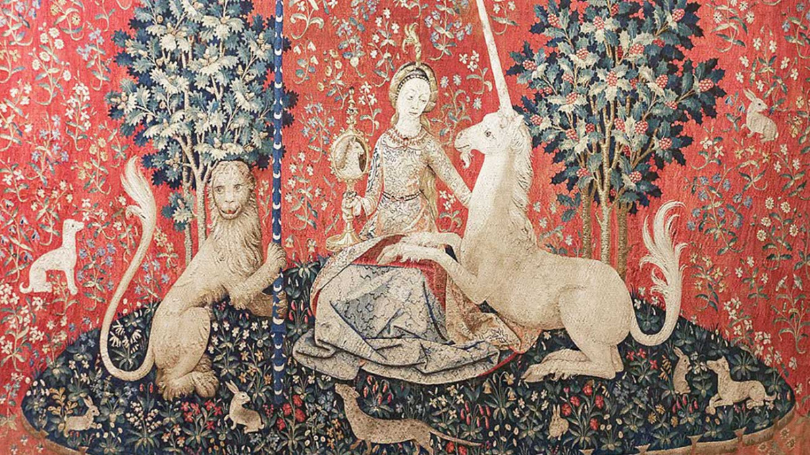
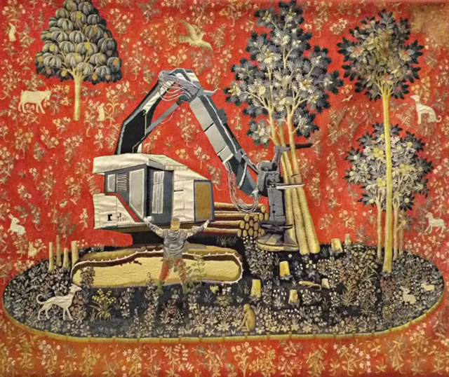
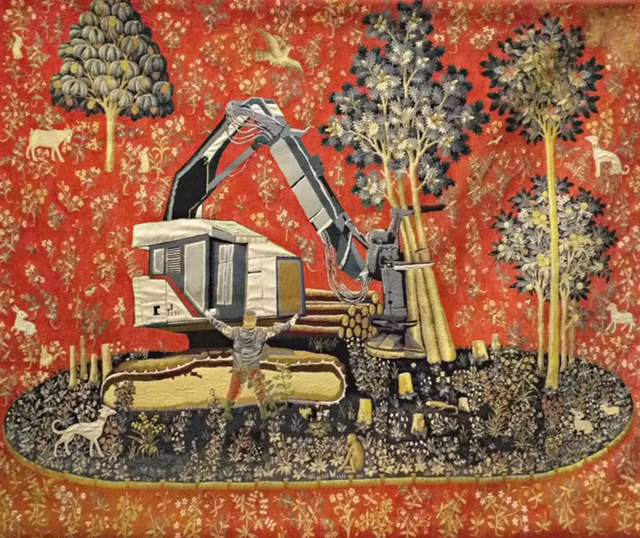
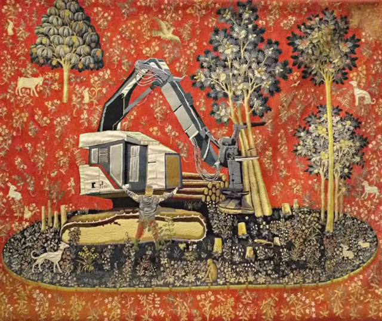

 


La dame à la licorne suite
Cette toile a été réalisée dans le cadre d’un concours organisé par les Beaux-Arts. La consigne était de s’inscrire dans la continuité de La Dame à la licorne et du travail de Suzanne Husky, qui dénonce la déforestation. Il s’agissait d’imaginer une vision de l’après-déforestation. Pour ma part, j’ai imaginé une masse informe et sombre, symbole de ce que pourrait devenir la nature si la pollution en faisait désormais partie intégrante. Dans ma peinture, cette pollution s’infiltre dans l’environnement, circule dans ses veines et en devient presque un élément vital.